BasePlayer manual
Main window

The main window of BasePlayer displaying three samples, a genomic region track and a population control data track. Variant view of chromosome 10. (a) Toolbar contains tools for managing the data and navigating the genome. (b) Genome bar visualizes chromosome bands and genes. Reference sequence and gene annotation can be changed from dropdown menus at left. Memory usage shows used and allocated memory for BasePlayer. (c) Region tracks are used to exclude and annotate variants. In addition, various types of regional or base specific scores can be visualized as histograms and TF binding motifs as sequence logos. Pressing the red play button will apply the track - this will exclude any variants outside the region. (d) Control tracks can be used to exclude common polymorphisms by setting the allele frequency threshold. (e) Sample tracks visualize VCF and BAM files of the sample overlayed. Sample name and statistics for currently visible variants shown on the left. Vertical lines represent variant calls in a sample, colored as red, green (SNV or indel in coding region, respectively) and grey (variant in non-coding region). Height is relative to the sequencing coverage at the variant locus.
Toolbar
File menu

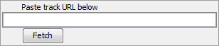
Tools
Table browser
Coverage manager
Variant caller
BED converter
BED converter is a tool, which allows user to import external annotation data, which is not in standard format (BED, BigWig, GFF etc.), to BasePlayer.
It converts any tab separated file (containing at least chromosome, start and end position fields) to a sorted, compressed and indexed BED file. The file is then usable as an annotation, filtering
and visualization track. See demonstration video of the BED converter usage with UCSC data in link below.
Open tab separated text file (gzipped or plain text) in BED converter. Several rows of the file appears on the table. Select correct header description for the columns using the dropdown menus on the header (red circle). Some columns may have been selected automatically. You must select at least "Chromosome", "Start" and "End" columns for BED conversion. Optional fields are "Name", "Score" and "Strand". Only selected files are added to processed BED file.
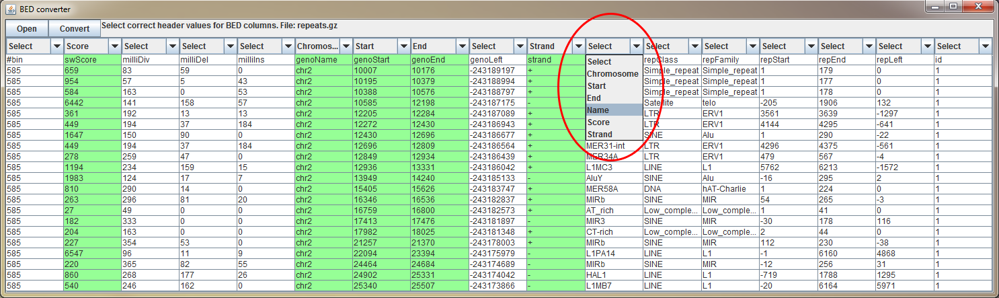
{kind=link}
Genome bar
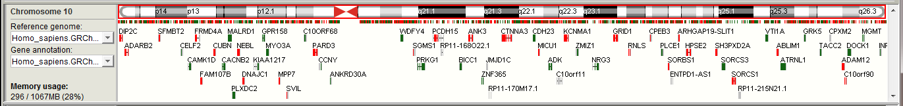{kind=link}
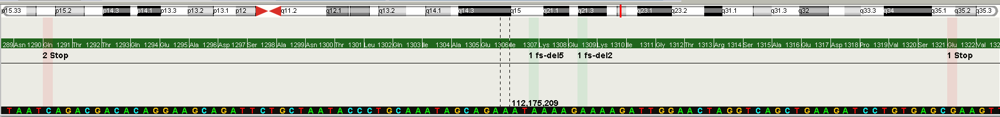 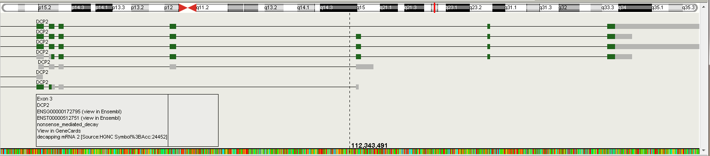
{kind=link}
{kind=link}
Sample tracks
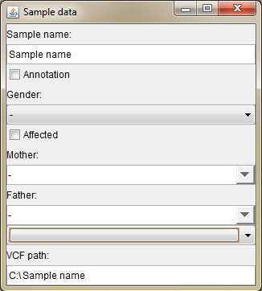Genome selector
Genome selector appears on the first start of the BasePlayer. This tool allows you to add new reference genomes and gene annotations. Revisit this window by clicking File -> Genomes -> Add new genome.... or by selecting "Add new reference..." from the reference dropdown menu on the left sidebar of the Genome bar.
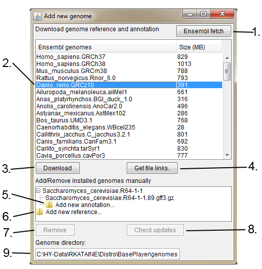
1. Fetch new reference genomes and gene annotations from Ensembl if available.
2. Select Ensembl genome.
3. Download selected Ensembl reference genome and gene annotation. Files will be automatically installed to your genome directory (9.).
4. Get download links for the reference genome and gene annotation files. If you can not connect to the Ensembl via BasePlayer, download the files using web browser and add the genome manually using the "Add new reference..." in this window (6.) and "Add new annotation..." (5.)
5. Add new annotation file (GFF3 or GTF) to the reference genome.
6. Add new reference genome (FASTA).
7. Remove selected genome or annotation.
8. Check, whether selected Ensembl genome has newer gene annotation version available.
9. Your genome directory, where genomes will be installed.
See instruction video, how to add genomes to BasePlayer:
Variant Manager

Variant Manager user interface and functions. (a) Panels for variant quality filtering, variant hiding and sample-wise comparison. (b) SNV and Indel quality filters. Separate filters for indels can be activated in the "Indels" tab - same filtering is used by default for SNVs and indels. (c) Variant annotation panel including gene effect and output writing options. (d) Output table shows a list of genes and variants which pass the filters set in the Variant Manager as well as any activated track. This view also includes tables for variant statistics and region track annotations. (e) Sample-wise comparison panel. The upper slider sets the minimum number of cases which must harbor a variant in the same gene for these variants to be shown. It can thus be used if the sample set consists of cases with a common disease, which might not share the same specific variant even though the same gene is mutated (e.g., sporadic cases or somatic mutations in cancer). Lower slider compares individual variants. For instance, the value 2/3 means that only variants shared by two or three (all) samples are included and visible on the screen. "Window size for variant cluster" sets variant clustering behavior. (f) Inheritance pattern selector. (g) Sample Data dialog. Change / set sample name, gender, disease state and parents. (h) Variant Annotation options. Select desired functional classes and options for variants, which are included in the results. (i) Output selector for variant annotation results. Select the desired output format for the result file.
Settings
General
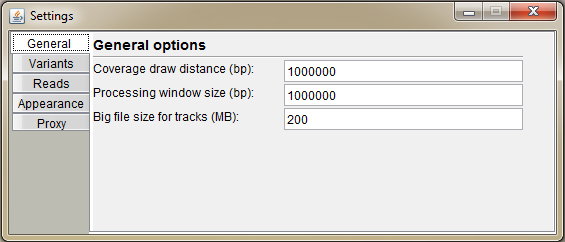Variants
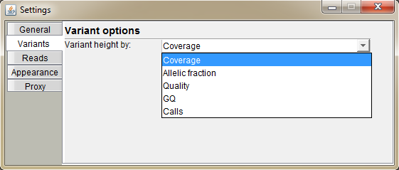Reads
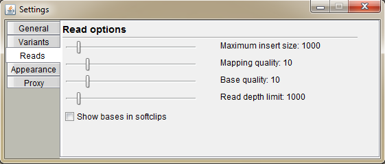Appearance
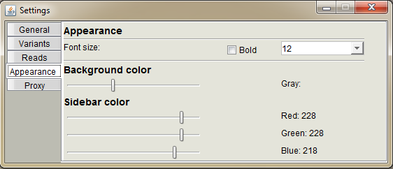Proxy
Set up your proxy settings. Check "Use proxy", select the protocol, host address and port. Finally press "Save".
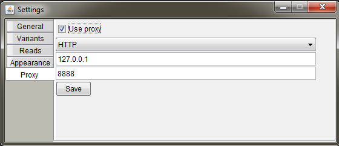
See instruction video at